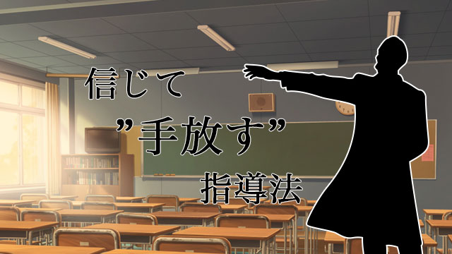

先週センター試験も終わり、いよいよ大学入試も本番が近づいてきています。
今年も例年同様高校3年生を指導しているのですが、ここ二、三年、自分の指導の仕方がじわじわ変わってきたように思います。
塾講師の仕事を本格的に始めたばかりの若い頃は、自分の仕事を「学問の楽しさを伝えること、そして生徒のやる気をかきたてること」だと考えていました。一昔前のドラマ『金八先生』ではありませんが、生徒に発破をかけてみたり、悩みを聞いてみたり、一緒に騒いでみたり、いろいろなことをしてきた気がします。私の行動から何らかの影響を受けてくれた生徒もいたようで、奮起して受験に臨み、成功した喜びを語ってくれることもありました。
それが最近では、「生徒のやる気をかきたてること」を重視していない自分がいます。より正確に言えば、“自分の仕事”であるとは考えないようにしています。というのも、そのようにこちらが意図して手を引っ張ろうとした生徒は、こと難関校受験についていえば失敗することの方が多いようなのです。それはなぜでしょう。
高校入試とは異なり、大学入試は“大人の入り口”です。大学はそこで学ぶ学問内容もさることながら、卒業後に待ち構える“就職”がちらつきます。つまり、学校生活や学問というある種純粋な活動だけではなく、将来設計という打算が加わるのです。やるべきことが膨大な大学入試ですから、一時の感情的な“やる気”だけでは完走することは不可能です。自身が望む人生とそれを実現するために必要な労力を天秤にかけ、納得づくで動くというかなり理性的な活動が必要です。それができるのでは、一言で言えば「精神的に成熟した生徒」です。他者から感情的な刺激を与えられて、それに反応するだけの生徒では、どうしても息切れしてしまいますから、そもそも受験合格という大目的を達成できないのです。
一時期テレビのＣＭで「やる気スイッチ」という言葉が話題になりましたが、こと難関大入試について言えば、そのようなスイッチは存在しないでしょう。あるのは「私はＡという将来像を描いている。それを実現するためにはＢの労力がかかる。ＡとＢを比べたとき、Ｂのコストを払ってもよいと判断する。よって行動する」という思考です。だからこそ、大学入試の指導をする際、現在の私が意識するのは、いかに「Ａ」が魅力的であるかを語り、説明することです。「A」は将来つける仕事であったり、学べる学問の面白さであったり、出会える友人の素晴らしさであったり様々ですが、いずれも“ただ提示する”だけです。その提示を受けて、検討するか無視するか、興味を持つか持たないかは、極言すれば生徒の問題です。
このように思ったとき、私はこれまでの自分がいかに生徒を信じていなかったかを痛感しました。ことさらに発破をかけ奮起を促す行動は、一見生徒のことを想っているように見えますが、実際には生徒が大人として自立していないと考えていることの裏返しだったのです。端からは迷走しているように見える生徒に対して感情的に介入することを抑え、生徒自身の力で受験を戦う理由を見つけてもらうことこそが、受験合格を達成するための王道なのではないかと考えるようになりました。
長々と自分語りをしてしまいましたが、これは実は保護者の皆さんからよく相談を受けるテーマでもあります。
「子どものやる気がない」
「積極的に動かない」
「叱っても馬耳東風」
「面倒をしっかり見てほしい」
全くの他者である講師のわたしでも、担当の生徒のやる気の有無にはやきもきしますから、それが血のつながった親子であればなおさらでしょう。しかし、そこで無理矢理何かを強制しても、上述したように、こと難関校入試に関しては無意味です。さらに踏み込んでしまえば、高校生はもういい年ですから、親の言葉に簡単に動かされることはありません（もちろん講師の言葉にも）。できることは、生徒が論理的に「勉強する理由」を組み上げる際に必要な情報を提供することと、そのやり方を提供することだけです。そして最後に、「この子は最終的には自分なりの勉強する理由を組み上げられるはず！」と強く信じることでしょう。
教育研究所ARCS所長の管野は常々「（こどもを）信じて手放す」と言っていますが、この言葉がまさにもっとも当てはまるのが高校3年間かもしれないと、最近強く想います。
エンライテックの詳細を見る ＞＞